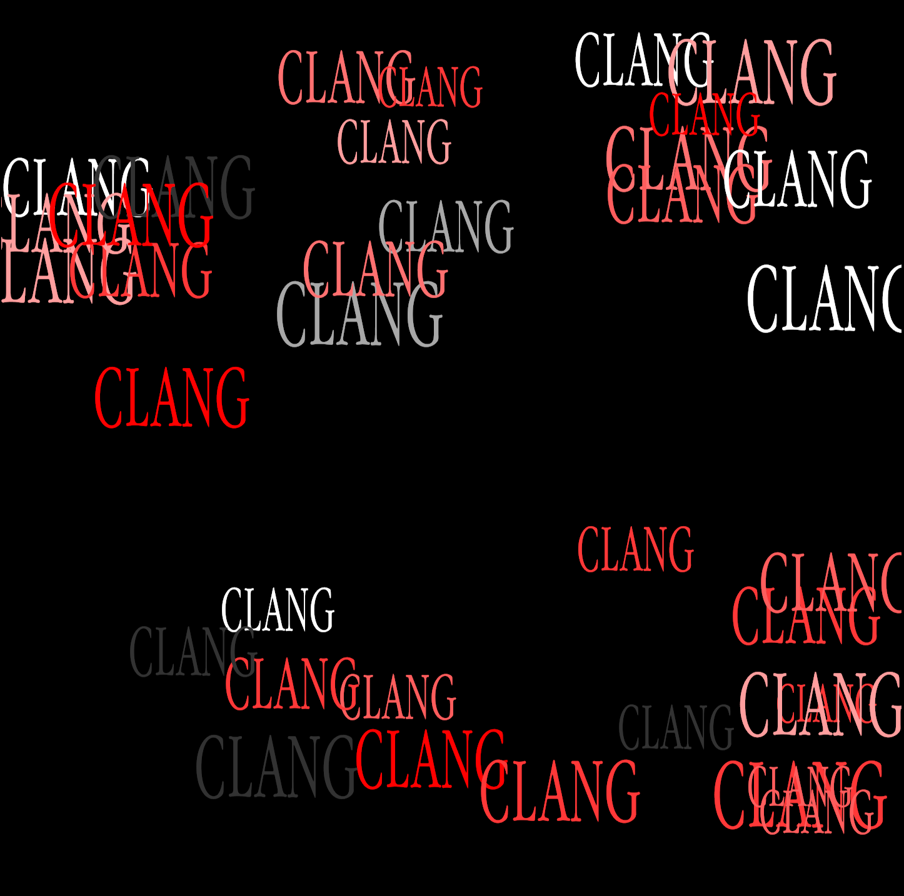
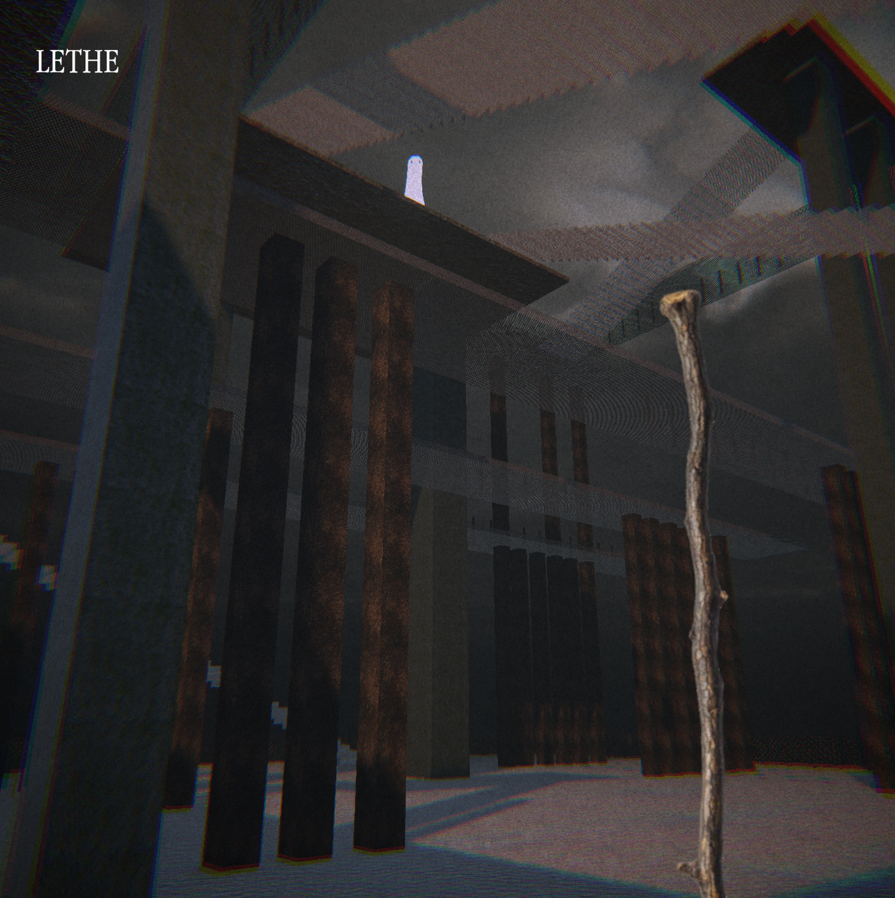

home
about me
some things i made
- abigail
- a machine to devour us all
- pigeon lady
- this journey
- you, the memorious
- the king of wands
- the reversed queen of wands
- ode to american football
- spencer (from the hit 2007 nickelodeon teen sitcom icarly)'s ultimate rat race!
- portrait of a detestable beast
- scratch
- garden at crab nebula
- psychopomp
- and i dreamt we were dancing in a maze
my itch page
my bluesky
my email
THE REVERSED QUEEN OF WANDS
The Reversed Queen of Wands is a game made in a weekend. With this project I explored creating an oppressive lonely environment and using sounds in interesting ways. This game is about loneliness, about shouting into the void, about attempting to connect and failing every time.In this project I did most parts of the development, except I borrowed a bunch of sfx and textures.
Click here to play The Reversed Queen of Wands!

